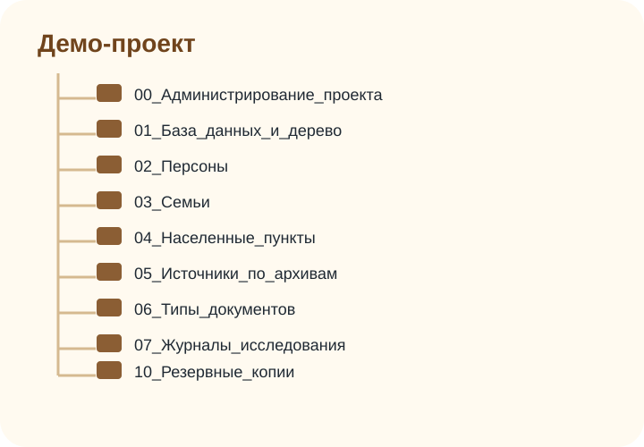

Руководство + демонстрационный архив
Как вести глубокое исследование родословной до 10-го поколения и дальше
Методика построена вокруг главного принципа: двигаться от известного к неизвестному, доказывая каждую связь документами, а гипотезы, противоречия и отрицательные результаты фиксировать отдельно.
Методология
Логика исследования и уровни доказанности
Полноценный результат — это не только дерево. В проекте должны быть дерево, доказательная база, цифровой архив, журнал поиска, список гипотез, таблица противоречий, история населённых пунктов и отчёты по линиям.
Правильное движение
- 01Зафиксировать себя, родителей, бабушек и дедушек.
- 02Подтвердить каждую связь ребёнок → родители.
- 03Установить точное место, конфессию, сословие и период.
- 04Подобрать источники по месту и времени: ЗАГС, метрики, исповеди, ревизии, военные документы.
- 05Записать вывод, противоречия и следующий вопрос.
Шкала статусов
| Статус | Как использовать |
|---|---|
| Предание | Семейный рассказ без документа. Не удалять, но не считать фактом. |
| Гипотеза | Логичная версия с ограниченной доказательной базой. |
| Вероятно | Несколько согласующихся косвенных источников. |
| Подтверждено | Прямой документ или сильная совокупность независимых свидетельств. |
Запреты исследования: не копировать чужие деревья без проверки, не объединять людей только по фамилии, не заносить дату без источника, не исправлять старое написание имени без фиксации оригинала, не удалять противоречивые сведения.
План по поколениям
Дорожная карта от домашнего архива к XVIII веку
Ниже — интерактивная карточка этапов. Выберите глубину, чтобы увидеть приоритетные источники и критерий перехода дальше.
ВопросГипотезаИсточникиПоискДокументАнализВывод
Источники
Что искать и когда использовать
Генеалогический поиск строится не вокруг одной базы, а вокруг набора источников по периоду, месту, конфессии и сословию.
Документы
Полный цикл обработки документа
Каждый документ нужно не только сохранить, но и описать: происхождение, архивный шифр, качество, факты, цитату, транскрипцию и связь с персоной или событием.
Цикл обработки
- Получить документ и зафиксировать происхождение.
- Сохранить исходную копию без изменений.
- Создать рабочую копию и, при необходимости, улучшить читаемость.
- Сделать дипломатическую и нормализованную транскрипцию.
- Извлечь факты: даты, места, связи, роли, свидетелей.
- Добавить цитату источника и оценку надёжности.
- Проверить противоречия и внести вывод в журнал.
Минимальная карточка источника
Source ID: S0132
Тип: метрическая книга
Архив: ГАТО
Фонд/опись/дело/лист: ф.93, оп.1, д.245, л.17об
Дата записи: 1891-03-12
Место: д. Ивановская, Тульская губ.
Оригинал/копия: цифровая копия
Файл: 1891-03-12__Сидоров_Петр...jpg
Оценка: первичная информация о рождении| Материал | Практика оцифровки | Комментарий |
|---|---|---|
| Современный документ | 300–400 ppi, PDF/A или JPEG для доступа | Мастер-копию не редактировать. |
| Старая фотография | 600 ppi и выше | Сканировать лицевую и оборотную стороны. |
| Архивное дело | Обложка дела, затем каждый лист с номером | Фиксировать фонд, опись, дело, лист. |
| Интервью | WAV/BWF для мастер-файла, MP3 для обмена | Нужно согласие информанта и метаданные. |
Цифровой архив
Русская структура папок и правила имён файлов
Исходная англоязычная структура адаптирована в русские понятные названия. Номера оставлены, чтобы папки сортировались в правильном порядке.
Структура демо-проекта
Демо_исследование_родословной/
├─ 00_Администрирование_проекта/
├─ 01_База_данных_и_дерево/
├─ 02_Персоны/
├─ 03_Семьи/
├─ 04_Населенные_пункты/
├─ 05_Источники_по_архивам/
├─ 06_Типы_документов/
├─ 07_Журналы_исследования/
├─ 08_Отчеты/
├─ 09_ДНК_и_приватные_данные/
└─ 10_Резервные_копии_и_контрольные_суммы/Шаблон имени
YYYY-MM-DD__Фамилия_Имя_Отчество__ТипДокумента__Место__Архив-Фонд-Опись-Дело-Лист__v01.ext
Если дата неизвестна, используйте 0000-00-00. Если дата примерная, допустимо c1910. Исходные файлы не перезаписываются: версии идут как v01, v02, transcription_v01, proof_v01.
Таблицы
Рабочие журналы и шаблоны
В демо-архив включены заполненные примерными строками таблицы: персоны, источники, семьи, журнал поиска, архивные запросы, гипотезы, противоречия, карта населённых пунктов и физический архив.
Персоны
ID, ФИО, даты, места, родители, супруги, конфессия, источник, статус.
Источники
Архив, фонд, опись, дело, лист, тип, дата, ссылка, оценка надёжности.
Журнал поиска
Дата, вопрос, место поиска, запрос, результат, файл, следующий шаг.
Противоречия
Событие, варианты, источники, анализ, решение и статус проверки.
Чек-лист одной родственной связи
Отмеченные пункты сохраняются в браузере.
География
Исследование населённого пункта
В российской генеалогии место часто важнее фамилии: один населённый пункт мог менять губернию, уезд, волость, приход, епархию и архив хранения документов.
Соберите варианты названия
Фиксируйте исторические написания, «тож», исчезнувшие деревни, современные переименования.
Определите юрисдикцию
Губерния, уезд, волость, стан, приход, епархия, современный район.
Проверьте справочники и карты
Списки населённых мест, старые карты, EtoMesto, епархиальные справочники.
Найдите приход и соседние деревни
Браки, восприемники и переселения часто происходили в радиусе 5–15 км.
Составьте карту источников
Для каждого источника запишите годы, архив, фонд, опись, дело, доступ и статус заказа.
ДНК и этика
ДНК — вспомогательный инструмент, а не замена документам
ДНК помогает проверять гипотезы, искать неизвестные ветви и разделять однофамильные линии, но результат должен сопоставляться с архивными доказательствами.
Аутосомный тест
Ищет совпадения по большинству линий в пределах нескольких поколений. Полезен для кластеров родственников.
Y-ДНК
Проверяет прямую мужскую линию отец → отец → отец и иногда фамильную гипотезу.
mtDNA
Проверяет прямую женскую линию мать → мать → мать, но обычно требует осторожной интерпретации.
Приватность: сведения о живых людях, ДНК-данные, адреса, телефоны и чувствительные семейные факты храните отдельно и не публикуйте без согласия.
Ссылки
Полезные статьи, архивы и инструменты
Ссылки сгруппированы по назначению. Используйте их как маршрутизаторы к первичным документам, а не как замену проверки.
| Ресурс | Для чего | Ссылка |
|---|
Контроль качества
Типичные ошибки и как их предотвращать
Разворачивайте карточки, чтобы увидеть практическое решение.
Готовый пример
Скачать демо-проект исследования родословной
Внутри архива: русская структура папок, демонстрационные `.xlsx` с заголовками и строками, изображения выписок ЗАГС, метрической книги, ревизской сказки, наградного документа и семейной фотографии, шаблоны запросов, README и контрольные суммы.
Скачать downloads/demo_proj.zip